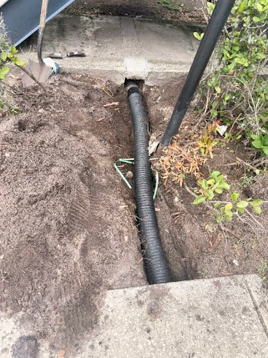
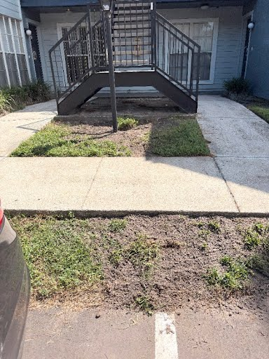
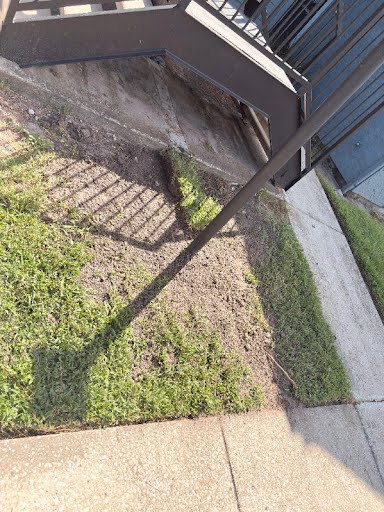
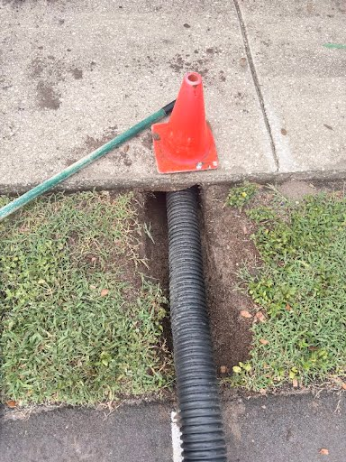

French Drains · Yard Drainage · Underground Pipe Systems
CLFT INC
Tampa's drainage specialists. We stop standing water, protect foundations, and keep your property dry — done right the first time.
What we do
Drainage Solutions for Tampa Properties
Standing water, flooded yards, and foundation moisture don't fix themselves. We diagnose the problem and install the right system to solve it.
French Drain Installation
Underground perforated pipe systems that collect and redirect groundwater away from your foundation, yard, and structures before it causes damage.
Yard & Lawn Drainage
Proper grading, surface channels, and subsurface drainage to eliminate standing water in lawns, common areas, and low-lying property sections.
Trench Drain Systems
Channel drains installed in driveways, walkways, and concrete pads to capture surface runoff before it reaches your structure or saturates the soil.
Catch Basin Installation
Surface-level collection basins that intercept and channel large volumes of stormwater into underground pipe systems, protecting paved areas and landscaping.
Underground Pipe Repair
Locate and repair broken, crushed, or root-damaged drainage pipes without tearing up your entire yard. We fix what's actually failing, not everything around it.
Site Grading & Regrading
Correct negative slope issues that direct water toward your home. We regrade the ground to establish proper drainage pitch away from structures.
Proof of work
Real Jobs, Real Results
Every photo is from an actual completed job — French drain systems and drainage pipe installations across the Tampa area.

Foundation Drainage
Commercial Property — After
Drainage Restoration
Pipe Under SidewalkWhy choose us
Straight diagnosis.
Solid work.
No runaround.
CLFT INC is a Tampa-based drainage contractor. When you call, you're talking to the person doing the work — not a call center, not a chain of subcontractors.
We specialize in residential and commercial drainage: French drains, underground pipe systems, and yard drainage that actually solves the problem instead of masking it.
What to expect
- Direct line to the owner — no phone trees
- Free on-site assessment before any work
- Honest diagnosis — we fix what needs fixing
- Clean workmanship, proper backfill and restoration
- Tampa local — familiar with Florida's rain and soil
- Residential & commercial drainage specialist
Common questions
Frequently Asked Questions
Straight answers about drainage work in the Tampa area.
Ready to stop the water problem?
Call CLFT INC for a free site estimate.
French drains, yard drainage, underground pipe repair, trench drains, catch basins, or site grading — call to talk through what you're dealing with.
(813) 753-6579